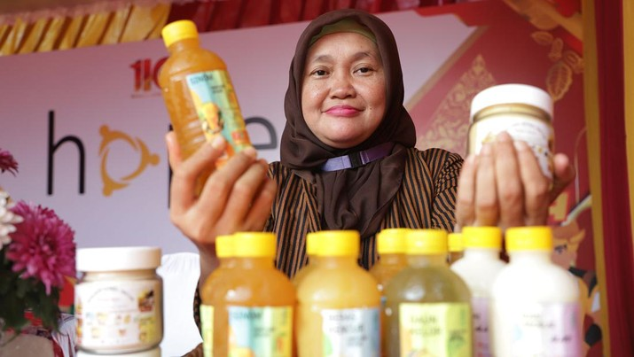

Oleh : Detik Finance
Rabu, 27 September 2023
PT HM Sampoerna Tbk (HMSP) melalui Sampoerna Retail Community (SRC) mendorong pengembangan usaha mikro, kecil, dan menengah (UMKM) di Indonesia, khususnya pelaku usaha toko kelontong. Omzet Toko SRC secara keseluruhan pada tahun 2022 diperkirakan mencapai Rp 236 triliun, atau setara dengan 11,36% dari total produk domestik bruto (PDB) Retail Nasional tahun 2022 yang sebesar Rp 2.077,43 triliun.
Menteri Koordinator Bidang Perekonomian Airlangga Hartarto menyebut kolaborasi antara pemerintah dan sektor swasta dalam mengembangkan UMKM sangat penting untuk mendongkrak perekonomian Indonesia. "Kolaborasi yang kuat antara pemerintah dan sektor swasta adalah kunci untuk optimalisasi. Pemerintah mengapresiasi langkah SRC yang sejalan dengan upaya pemerintah untuk pengentasan kemiskinan dan pemberdayaan ekonomi masyarakat," ujarnya melalui sebuah video di Soehana Hall Energy Building, dikutip Kamis (28/9).
Menurutnya, kontribusi SRC terhadap digitalisasi UMKM, sistem keuangan yang inklusif, serta mendorong penggunaan pembayaran non tunai di toko kelontong binaan SRC. Berdasarkan data Kementerian Koperasi dan Usaha Kecil Menengah (KemenkopUKM) sebanyak 65,5 juta UMKM berkontribusi terhadap 99% unit usaha di Indonesia. Selain itu, UMKM memberikan kontribusi PDB sebesar 61% atau Rp 9.580 triliun serta menciptakan lapangan kerja bagi 97 persen dari total tenaga kerja nasional. Pemerintah sendiri akan memberikan dukungan untuk membantu UMKM dan mendorong berbagai program UMKM seperti pembiayaan, digitalisasi UMKM, dan kemitraan UMKM dengan usaha besar, serta memperluas akses pasar "Toko kelontong tradisional adalah bisnis UMKM yang menjanjikan dan terus dapat dikembangkan menjadi toko yang lebih modern, terdigitalisasi, dan berdampak luas," ujarnya
Dalam kesempatan yang sama, Direktur PT HM Sampoerna Tbk. Ivan Cahyadi mengungkapkan, hingga kuartal III tahun 2023, jumlah toko SRC di seluruh Indonesia telah mencapai lebih dari 243 ribu toko yang tergabung dalam 8.200 paguyuban, serta aktif berkolaborasi dengan 6.300 Mitra SRC yang merupakan toko grosir.
"SRC terus melakukan berbagai inovasi, digitalisasi, dan kolaborasi dalam rangka meningkatkan daya saing sehingga UMKM di Indonesia bisa naik kelas dan menciptakan dampak positif bagi perekonomian nasional dan penyerapan tenaga kerja di Indonesia," sebutnya.
Sedangkan Direktur PT SRC Indonesia Sembilan Rima Tanago mengatakan, SRCIS juga telah menggelar berbagai program untuk membina UMKM, mulai dari inovasi, digitalisasi, dan kolaborasi. Para pemilik Toko SRC menyebut rata-rata omzet mereka setelah bergabung menjadi Toko SRC adalah Rp85 juta per bulan atau mengalami kenaikan rata-rata hingga 42%. Di samping itu, 77% toko kelontong anggota SRC memiliki usaha tambahan sejak bergabung dengan SRC. "Tidak hanya bagi para pemilik toko, keberadaan SRC juga memberikan manfaat bagi lingkungan sekitar," pungkasnya.